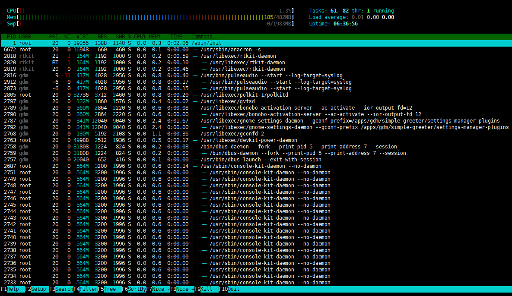
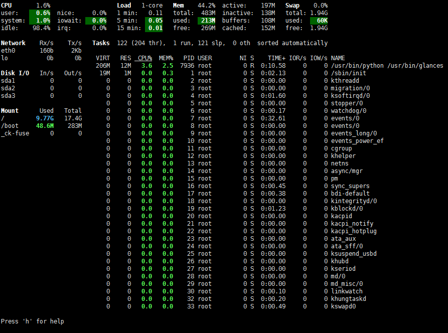
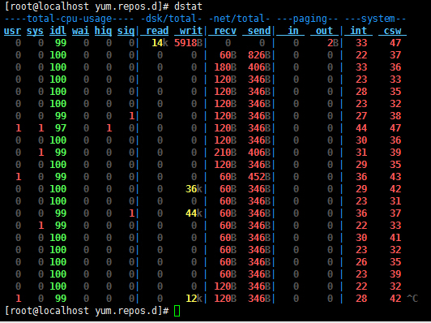
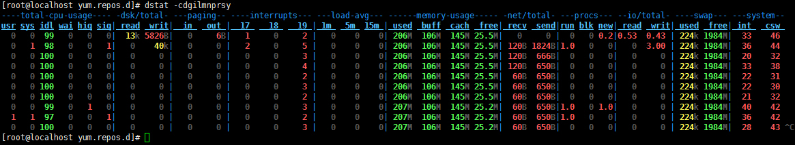
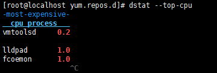

工欲善事情，必先利其器，生产环境中的服务器在处理请求并生成回应数据的时间主要消耗在服务器端，包括了众多的环节，如何全面了解我们linux服务器的CPU使用率、使用时间、内存占用比例、磁盘IO数据、网络相关数据等等众多指标，保证我们的linux服务器顺利完成每一个请求，怎能没有几个趁手的利刃，而今天就让我们见识一下系统管理中三大利刃。
相传一把三尺长的软剑，叫七星绝命剑，剑刃上嵌着七颗星状的暗器，一剑刺出，使剑人的内力劲透剑身之时，那七颗星状的暗器便飞脱疾出，出其不意地取人性命，（见古龙《吸血娥》）。而htop便是我们今天所讲的第一把利刃，和上面传说中的七星绝命剑类似，有着七个最常用命令，让我们先来看一下htop的真面目：

从上图可以看出，相较于CentOS发行版上系统自带的top工具，htop工具无论是信息内容丰富程度，还是在用户界面的友好度上，都有着无可比拟的优势，而且htop工具支持交互式命令，下面让我们来认识一下htop工具常见的七个交互式命令。
u ：具有过滤功能，能显示用户指定用户的进程
s ：选定某个进程后，使用该命令可以跟踪该进程所发起的系统调用
l ：选定某个进程后，使用该命令可以显示该经常打开的文件有那些
t ：直接使用该命令可以显示进程的层级机构
a ：使用该命令可以设定某个进程的cpu亲缘性
k ：使用该命令可以结束某个指定进程
h ：该工具还有众多功能，使用该命令可以获取该工具其他帮助信息
以上七个命令就是htop工具最常用的命令，掌握好这七个命令就好比拥有了七星绝命剑的七颗星状暗器，杀人于无形，旨在一瞬间，但是如何把握这七个形状暗器的力度和功用，需要我们对htop有着更深入的理解，接下来我们详细介绍htop的众多输出信息的详解：
CPU usage bar：该行主要显示CPU使用情况，而且不光这些，htop还为将不同颜色来区分是使用情况，蓝色的表示low-prority使用，绿色的表示normal使用情况，红色的表示kernel使用情况，青色的表示vistualiz使用情况。
Memory bar：该行主要表示内存使用情况，同样的htop使用了不同颜色来区分是使用情况，绿色的表示已经使用内存情况，蓝色的表示用于缓冲的内存使用情况，黄色的表示用于缓存的内存使用情况。
Swap bar：该行主要显示交换分区使用情况，当你发现你的交换分区已经派上用场的时候，说明你的物理内存已经不足，需要考虑增加内存了。
PID：表示进程号
USER：发起该进程的用户名
PRI：进程优先级
NI：nice值
VIRT：进程需要的虚拟内存
RES：常驻内存，也就是物理内存
SHR：共享内存
S：进程的运行状况：R表示正在运行，S表示休眠，Z表示僵死状态
CPU%：占用的CPU使用率
MEM%：物理内存使用率
TIME%：占用CPU的累计时长
Command：进程启动的启动命令名称即路径
有了以上的详解，我想htop这把利刃将会发挥最大的用处。
相传君子剑剑身乌黑，没半点光泽，就似一段黑木一般，和平常的宝剑不同，这剑既无尖头，又无剑锋，圆头钝边，倒有些似一条薄薄的木鞭，但寒气逼人，而且锋锐异常。此剑与淑女剑一模一样，大小长短，全无二致，双剑的材料完全相同，都具有极强的磁性，如果放的距离较近，双剑会自动吸在一起此剑后落到少年杨过手中，与小龙女手里的淑女剑联剑出击，以玉女素心剑法威震天下，（见《神雕侠侣》）。而glances就是我们要说的第二把利刃，与相传的君子剑有相似之处，glances支持客户端/服务器模式，远程模式使用将会有奇效，接下来我们认识这把君子淑女剑吧。
glances并不是CentOS发行版默认安装的工具，需要在epel源里面安装使用，首先让我们先来认识一下glances吧，如下图：

glances工具支持的选项众多，我们先来认识一下glances的常用选项：
-b ：以byte/s为单位显示网卡设备
-d ：禁用或者关闭显示磁盘IO功能模块
-f ：通常和-o一起使用设置输出文件位置即格式
-o ：指明输出的格式，通常为｛CSV|HTML｝
-m ：关闭mount功能模块
-n ：关闭网络功能模块
-t ：指明刷新时长，默认为3秒
-1 ：单独显示每颗CPU相关的负载数据信息
以上就是glances工具常用选项，同时glances工具还支持在工作界面下直接按相对应的选项就可以关闭或者设置相关功能的，上面曾说过glances工具支持C/S模式，那它是如何在C/S模式下工作的那？ 首先：server端以监听模式启动glances；其次：client端以远程模式启动glances远程连入指定服务器，并获取server上相关的性能数据。
服务端命令：glances -s -B IPADDRESS（指定用于监听的本地地址）
客户端命令：glances -c IPADDRESS（指明连入的服务器地址）
glances所显示的丰富信息包括了系统运行的众多模块，包括了cpu相关模块，多核情况下每个核心的负载情况，内存使用模块，交换分去使用情况，网络使用状况，磁盘IO使用情况，以及各分区挂载情况，我相信通过了解以上系统运行期间的状况，一定能判断出当前系统运行是所出现的问题，帮助我们找出问题所在。
相传当初傲日并非打算铸造「绝世好剑」，而是要铸造「败亡之剑」，可惜「败亡」的铸造过程太过邪异，每次铸剑，均会造成人命伤亡，故此傲家中人弃「败亡」而改铸「绝世」。铸剑的最后步骤是以三毒之血「贪」（剑贪之血），「瞋」（步惊云之血），「痴」（断浪之血）炼制。但所铸成的只是威力神髓所在的真元，而真正的剑体已藏于千万铸好的绝世好剑中，绝世好剑本身有吸摄天地灵气之能，同样也可吸收别人功力转为己用。位列当世十大神兵之一，见《风云》。而我们今天所说的第三把系统管理的兵刃，于绝世好剑有过之而不及，绝世好剑需要集三毒之血（剑贪之血）、（步惊云之血）、（断浪之血）炼制而成，而dstat整合了vmstat、iostat、netstat、ifstat四款工具的功能于一身，功能无比强大，首先来看看这个利刃的庐山真面目，如下图：

通过上图可以更直观的看出系统各功能模块的使用状况，而且dstat是CentOS默认提供的一款工具，并且使用起来十分的灵活，可以通过不同的组合来显示出我们需要的功能模块，下面来认识一下dstat这款工具的主要选项有那些：
-c ：显示CPU相关的统计数据
-d ：显示磁盘相关的统计数据
-g ：显示Page相关的速率数据
-i ：显示中断相关的统计数据
-l ：显示load average相关的统计信息
-m：显示内存相关的统计信息
-n ：显示网络相关的统计数据速率信息
-N ：指定接口
-p ：显示进程相关的统计数据
-r ：显示IO请求的速率
-s ：显示swap交换分区的相关数据
-y ：显示系统相关的数据包括中断和进程间切换等相关信息
–top-cpu：显示最占用CPU的进程
–top-bio：显示最消耗块级别IO的进程
–top-time：显示最占用CPU时长的进程
–top-io：显示最占用io的进程
–top-mem：显示最占用内存的进程
–ipc：显示进程间通信相关的速率数据
–tcp：显示tcp套接字相关的数据
–udp：显示udp套接字的相关数据
–raw：显示raw套接字相关数据
–unix：显示unix sock接口相关的统计数据
-a ：相当于-cdngy
以上就是dstat工具的常用选项，之所以说该使用该工具十分领过是因为它即可以加上众多的参数来显示系统运行时丰富的各个功能模块的状态信息，如下图：

同时又可以根据自己的需要来单独显示某一个功能模块的信息或者显示当前系统最占用CPU的进程，如下图：

以上就是系统管理中的三把利刃，只要精通任何一个工具，都有助于我们更加深入的了解我们系统运行过程中的问题和不足，及时的发行并解决这些问题，但同时我们也应该认识到，所谓的这些工具都是通过整合或分析/proc/这个伪文件系统，为什么说它是伪文件系统那，因为它只存在内存当中而不占用外存空间，它是以文件系统的方式访问系统内核数据的操作提供接口，要想使用好以上三个工具，还需要更深入的理解系统是究竟怎么运行起来的，以及系统运行的原理是什么，当我们真的理解了这些，我想那个时候就是我们自己制作工具开始，正所谓真正的高手也都是制作工具的高手，就如同江湖里说的最好的境界乃是无剑胜有剑，摘叶飞花皆可伤人。